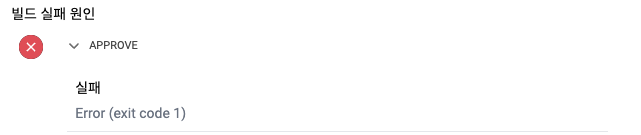
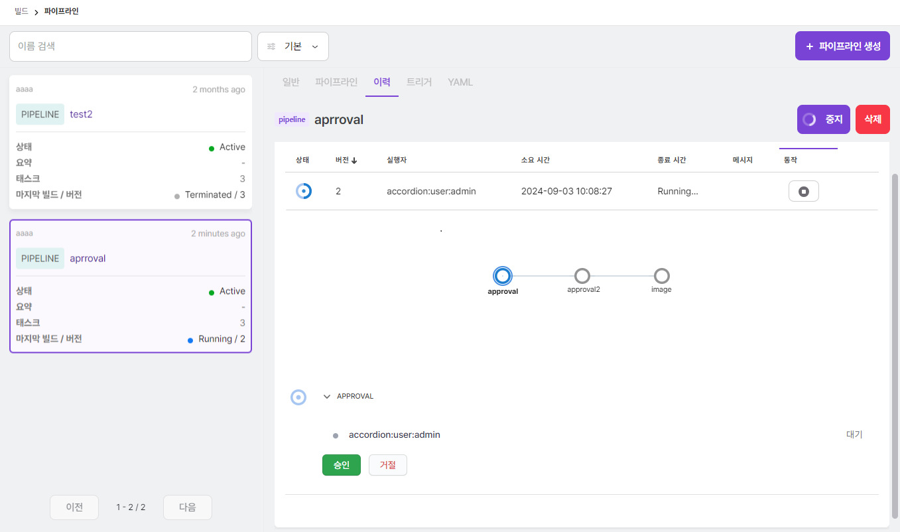
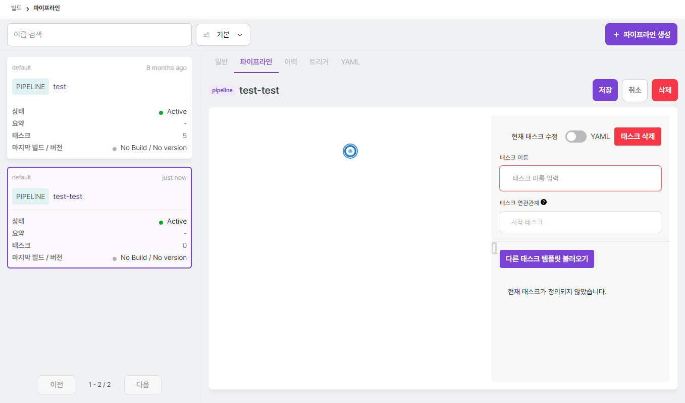
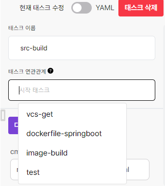
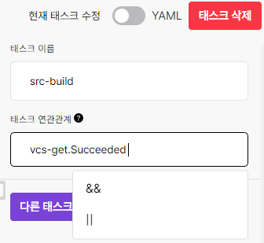
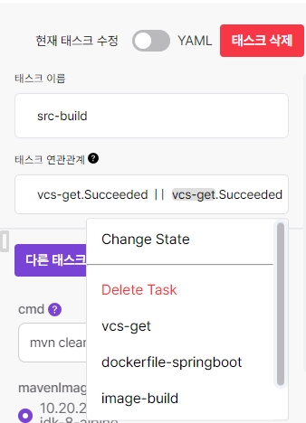

빌드
빌드에서는 파이프라인, 승인, 태스크 템플릿 등의 메뉴를 이용해 파이프라인 또는 카탈로그와 파이프라인에서 사용할 태스크 템플릿을 작성하고 파이프라인에서 요구하는 승인 절차를 처리할 수 있다.
파이프라인
파이프라인은 이미지 빌드 및 배포를 위해 한개 이상의 태스크를 가지고 태스크의 연관 관계(디펜던시)를 관리한다. 파이프라인은 지속적으로 수행이 가능하며 수행에 대한 이력을 관리할 수 있다.
파이프라인 메뉴에서는 파이프라인을 실행한 빌드 이력을 확인할 수 있다. 이때 개별 빌드에 대한 상태 정보가 아이콘으로 표시되는데 각각이 의미하는 바는 다음과 같다.
| 이미지 | 태스크 상태 |
|---|---|
종료(Terminated): 사용자가 빌드를 중지한 상태 |
|
성공(Succeeded) : 태스크가 수행하고 종료코드(exit code)가 0으로 완료된 상태 |
|
실행 중(Running) : 태스크가 수행되고 있는 상태 |
|
|
실패(Failed) : 태스크가 수행되었지만 종료코드가 0이 아닌 것으로 완료된 상태 |
|
에러(Error) : 태스크가 실행되지 못하거나 비정상 종료된 상태 발생 예시
|
대기(Pending) : 태스크가 수행 전 대기하는 상태 |
|
경고(Warning): 태스크를 수정 중에 잘못된 데이터를 입력하는 경우 발생 |

빌드 이력을 선택하면 개별 빌드에 대한 상세 정보를 확인할 수 있다.
개별 빌드는 하나 이상의 태스크로 구성되며 태스크를 선택하면 해당 태스크에서 발생한 로그를 확인할 수 있다.
|
실패한 태스크의 경우 실패한 원인을 확인할 수 있다.

|
|
태스크에는 승인 태스크도 있다. 승인 태스크의 경우 태스크를 선택했을때 로그 정보가 제공되는 것이 아니라 승인 목록이 나타나고 사용자가 승인자 목록에 포함되어 있으면 승인 또는 거절이 가능하다.

승인의 경우 모든 승인자가 승인해야 다음 태스크로 넘어가며 한명의 승인자라도 거절하면 파이프라인은 중지된다.
|
상단의 파이프라인 탭을 선택하면 파이프라인을 구성하고 있는 태스크 정보를 그래프로 확인할 수 있다. 그래프의
노드는 태스크를 의미하며 노드를 선택하면 해당 태스크에 대한 정보를 조회할 수 있다.
상단의 YAML 탭을 선택하면 파이프라인을 구성하는 정보를 YAML 편집기로 확인할 수 있으면 UI에서 설정하지
못하는 정보에 대해서도 직접 수정할 수 있다.
YAML 편집기로 보면 예약된 환경변수를 볼 수 있다. 파이프라인에서 예약된 환경변수는 다음과 같다.
| 의미 | 환경변수 표현식 |
|---|---|
파이프라인 이름 |
|
파이프라인 네임스페이스 |
|
파이프라인 UID |
|
파이프라인 인스턴스 이름 |
|
빌드 이름 |
|
빌드 버전 |
|
빌드 생성자 이름 |
|
빌드 생성자 그룹 |
|
파이프라인 생성
+ 파이프라인 생성 버튼을 선택하면 나타나는 화면에서 파이프라인 정보를 입력하여 생성할 수 있다. 생성 시에는 FORM 또는
YAML로 입력할 수 있다.
입력하는 정보는 다음과 같다.
| 항목 | 설명 |
|---|---|
파이프라인 이름 |
생성할 파이프라인 이름 |
파이프라인 템플릿 선택 |
파이프라인을 구성하는 태스크에 대한 정보를 템플릿으로 선택 |
파이프라인 미리보기 |
파이프라인을 구성하고 있는 태스크 정보를 그래프로 확인 |
파이프라인 요약 |
파이프라인에 대한 한줄 요약 (파이프라인 목록에 표시) |
파이프라인 설명 |
파이프라인에 대한 설명을 마크다운으로 작성 |
파이프라인 생성 시 파이프라인 템플릿에서 태스크에 대한 구성 정보를 불러와 설정할 수 있다. 템플릿을 수정해서 사용하고 싶은 경우 파이프라인 생성 후 수정 화면에서 변경 사항을 반영한다.
파이프라인 생성 시 빈 템플릿 을 선택하면 태스크가 없는 파이프라인을 생성할 수 있다. 이 경우 처음부터
파이프라인을 모두 작성할 수 있다.
|
파이프라인 수정
파이프라인을 생성할 때 태스크에 대한 정보는 파이프라인 템플릿에서 가져와 구성한다. 파이프라인의 태스크에
대한 정보를 변경해야하는 경우 변경할 파이프라인을 찾아 파이프라인 탭의 수정 버튼을 선택한다.
|
태스크가 없는 파이프라인의 경우에는 수정하여, 빈 태스크의

|
태스크에 대한 스펙을 작성할때에는 이름과 다른 태스크와의 연관관계를 설정하고 상세정보는 태스크 템플릿을 기반으로 작성한다.
태스크의 이름은 쿠버네티스 이름 정책에 맞춰 작성하고 태스크의 연관관계는 해당 태스크을 수행하는 조건에 대한
정보를 입력한다. 이는 이름.상태 의 형식으로 입력할 수 있다. 상태에 입력할 수 있는 값은 다음과 같다.
| 상태 | 설명 |
|---|---|
Succeeded |
성공 |
Failed |
실패 |
Skipped |
생략 |
Error |
에러 |
연관관계 작성 방법은 다음과 같다.
-
테스크 연결
-
테스크 연관관계의 입력창을 선택한 후 테스크 설정
-

-
-
테스크 상태, 조건 추가
-
순차적으로 테스크의 상태와 조건을 선택
-

-
-
테스크 삭제, 수정
-
수정이 필요한 테스크, 상태를 클릭하여 내용 변경
-

-
|
연관관계 작성의 예는 다음과 같다.
|
|
파이프라인의 작업공간에 대한 프로비저닝 설정 구성 시, 접근 모드를 ReadWriteOnce로 구성할 경우 위 tip의 예시와 같이 연관관계를 |
태스크를 작성하기 위해서는 태스크 템플릿에서 필요한 태스크를 불러와 파라미터를 설정하는 과정을 거친다.
태스크 템플릿의 종류는 다음과 같다.
| 종류 | 설명 |
|---|---|
일반 |
일반 유형 |
VCS |
Version Control System 유형 (e.g. git, svn), 만약 git 유형으로 AWS CodeCommit ssh 인증을 사용할 경우,
|
빌드 |
소스빌드 유형 (e.g. maven, ant, gradle) |
이미지 |
컨테이너 이미지를 만드는 유형 (e.g. kaniko) |
승인 |
승인 태스크로 |
아티팩트 |
파이프라인마다 설정되어 있는 S3저장소에 업로드한 데이터를 조회 |
파라미터까지 설정이 완료되면 저장 버튼을 선택해 작성을 완료한다.
| 파이프라인 수정 시 쿠버네티스 리소스를 참조하는 방법은 다음과 같다. |
-
현재 사용자 권한에 따른 쿠버네티스 리소스 목록을 선택
-
환경변수를 입력
-
파이프라인 수정 시 쿠버네티스 리소스를 생성할 수 있는 경우는
Secret,ConfigMap,PersistentVolumeClaim3가지 경우가 있다. 생성 화면은 각 메뉴별 생성 화면과 동일하다.
파이프라인 실행 미리보기
이력 탭에서 실행 버튼을 클릭하면 파이프라인 미리보기 페이지로 이동할 수 있다.
성공한 가장 최신의 빌드를 현재 버전 으로서 비교 기준이 되며, 빌드를 통해 반영될 파이프라인 변경 사항을 미리보기 버전 으로서 비교가 가능하다.
우측 상단의 실행버튼으로 파이프라인을 실행시킨다.
파이프라인 실행과 중지
이력 탭에서 실행 버튼을 선택하면 파이프라인의 빌드가 실행되는 모습을 확인할 수 있다.
상단의 중지 버튼 또는 우측의 멈춤 아이콘 버튼을 선택하면 진행 중인 파이프라인의 빌드를 중지시킬 수 있다.
파이프라인 재실행과 미리보기
빌드 내역 중 특정 빌드로 다시 배포하고 싶은 경우 해당 빌드 내역의 우측 버튼을 이용해 다시 배포도
가능하다. 이 경우 다시 실행하려는 빌드가 성공으로 완료되었을 때만 가능하다.
재실행 버튼을 눌러서 재실행에 대한 파이프라인 미리보기 페이지로 이동할 수 있다.
성공한 가장 최신의 빌드를 현재 버전 으로서 비교 기준이 되며, 재실행을 통해 반영될 파이프라인 변경 사항을 재실행할 버전 으로서 비교가 가능하다.
우측 상단의 재실행버튼으로 파이프라인을 재실행시킨다.
파이프라인 버전별 비교하기
성공한 특정 빌드 버전들에 한하여 서로 변경 사항을 비교가능하다.
리스트에서 선택한 특정 버전을 기준으로 다른 성공한 버전들과 비교할 수 있다.
트리거
카탈로그의 트리거와 사용방법이 동일하기 때문에 해당 가이드를 참고 한다.